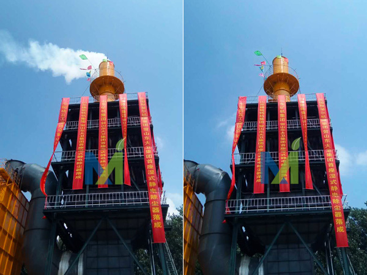
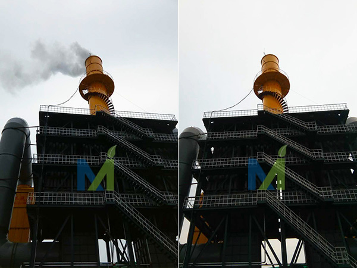

江西华邦复合材料有限公司专业从事电除雾器、湿式电除尘器及阳极管等除尘设备的研发生产
 13870005775
1387000577513870005775
邮箱：jiangxihb@163.com日前，天津印发《2019年天津生态环境工作要点》。文件提出，打好蓝天保卫战。完成荣程钢铁、天钢联合特钢2家钢铁企业烧结等重点工序超低排放改造，完成天钢集团、钢管集团2家钢铁企业4项治理改造任务并加快推动超低排放改造。完成全市22套公共煤电机组冷凝脱水深度治理和168台燃气锅炉低氮改造工程，全文如下：
2019年天津生态环境工作要点
2019年是新中国成立70周年，是打好污染防治攻坚战、决胜全面建成小康社会的关键一年。为深入贯彻习近平生态文明思想，全力改善我市生态环境质量，扎实做好2019年生态环境工作，现提出如下工作安排：
一、总体要求
以习近平新时代中国特色社会主义思想为指导，全面贯彻党的十九大和十九届二中、三中全会精神，全面落实市第十一次党代会、十一届四次、五次全会精神，以全国生态环境保护大会和习近平生态文明思想为遵循，以打好污染防治攻坚战为主线，聚焦污染防治和生态建设，集中力量打好蓝天、碧水、净土三大保卫战，助力服务高质量发展，着力解决突出环境问题，全力保障生态环境安全，全面深化生态文明体制改革，努力展现新时代生态环境保护的新担当新作为。
二、工作目标
2019年，牢牢守住生态环境质量只能更好、不能变坏的底线要求，全面落实污染防治攻坚任务，全市PM2.5年均浓度持续改善，地表水达到并优于Ⅲ类水质断面达到40%、劣Ⅴ类水质断面占比均达到25%。近岸海域水质稳中向好，完成国家下达总量减排任务。
三、重点任务
（一）服务高质量发展
加强源头管控。基本完成区域空间生态环境评价，制定生态保护红线、环境质量底线、资源利用上线、生态环境准入清单。严禁钢铁、焦化、水泥、电解铝、平板玻璃等行业新增产能；严格控制新建、改建、扩建涉及大宗物料运输的建设项目。实施精准化服务。进一步整合优化生态环境行政许可事项和审批程序，实行重大项目环评技术评估跟踪式服务。建立健全环境治理服务平台，促进环境治理需求与供给有效对接，指导企业制定科学的环境治理解决方案。实行秋冬季工业企业差别化错峰生产，按不限产、不同比例限产、全部停产划分为3-5类。生态环保“领跑者”企业可不实行错峰生产、不采取应急减排。
（二）打好污染防治攻坚战
01
全力打好蓝天保卫战。严格落实《打赢蓝天保卫战三年作战计划（2018-2020年）》，与生态环境部对标对表，提前谋划2019年重点工作任务，测算年度空气质量改善目标。深化“五控”治理，严格落实超低排放监管力度，完成荣程钢铁、天钢联合特钢2家钢铁企业烧结等重点工序超低排放改造，完成天钢集团、钢管集团2家钢铁企业4项治理改造任务并加快推动超低排放改造。完成全市22套公共煤电机组冷凝脱水深度治理和168台燃气锅炉低氮改造工程，持续实施区域降尘量考核，推进柴油施工机械和作业机械清洁化改造，继续淘汰老旧车，妥善应对重污染天气。建立重污染应急管控清单动态更新机制，持续细化“一厂一策”，确保应急减排措施可操作、可核查。加强重污染天气预警会商和京津冀及周边地区区域联动，遇不利天气及时启动应急机制，确保启动迅速、响应及时，将不利气象条件影响降至最低。落实国家部署要求，深化碳排放权交易市场建设，推动试点市场向全国市场过渡。
02
全力打好碧水保卫战，深入实施饮用水源地保护、黑臭水体治理、渤海综合治理攻坚战。深化工业集聚区水污染集中治理，实施18个氮磷排放重点行业企业超标整治。建成咸阳路、东郊等污水处理厂，加快消除污水管网空白区，建成区污水基本实现全收集、全处理，全市污水日处理能力达到368万吨。全面摸清重点河道湖库沿线入河排污口，推进合流制地区雨污水分流改造，巩固建成区黑臭水体治理成效，完成建成区外40%黑臭水体治理工程。开展饮用水水源地环境保护专项行动，推进规范化建设，开展万人千吨农村集中式饮用水水源地专项整治。统筹陆海污染防治，下大力气抓好入海排污口“查、测、溯、治”重点任务，大幅降低陆源污染物入海量，加快启动垃圾分类和“海上环卫”机制，推进水产养殖污染治理，实行近岸海域养殖区、限养区、禁养区三级管控，强化河口海湾等生态修复。加快渤海综合治理，启动湾长制建设，开展入海排污口溯源排查及达标整治，实行入海污染物总量控制。
03
全力打好净土保卫战，全面实施《土壤污染防治法》，完成农用地土壤污染状况详查报告，继续推进重点行业企业用地调查，更新公布天津市污染地块名录，加快推动受污染建设用地治理，重点推动天津农药总厂、同生化工厂土壤修复。加强农村农业污染防治，完成125个建制村环境综合整治工作任务。
（三）巩固提升生态环保督察成果
01
深入中央环保督察整改落实工作。加快推动14项未完成的任务整改落实，持续用力推进整改，确保督察问题不反弹，整改成效经得起检验。切实抓好市级生态环境保护督察整改落实工作。督促各区、各部门制定整改方案，实施清单管理、定期调度、及时通报。
02
完善常态化督察监察机制。优化整合驻区督办检查组，紧盯问题、紧抓整改，确保落地见效。组织开展专项督察、“回头看”。针对大气、渤海、农村污染治理等重点领域，适时组织开展专项督察，加大攻坚力度，平稳有序推进各项攻坚战，针对整改不力、成效不明显的区，适时进行“回头看”，督促问题整改到位。
03
加大重点领域监管执法。切实做好生态环境领域综合行政执法改革工作，厘清监管职责、明确执法边界。围绕打好污染防治攻坚战重点领域，突出环境质量不降反升、执法力度弱等重点区域，聚焦生态环境保护热点和群众反映焦点问题，开展集中执法行动，深化环境行政执法和刑事司法联动，用好用足按日连续计罚、查封扣押、限产停产等强制手段，严厉打击各类环境监测数据弄虚作假行为，严厉打击各种环境违法犯罪行为。
（四）保障生态环境安全
01
完成全市生态保护红线勘界定标阶段任务，实现生态保护红线精准落地，启动生态保护红线监管平台建设。编制《天津市双城间绿色生态环境保护规划》，严格分区分级管控，助力推动构筑双城间绿色生态屏障。开展自然保护区“绿盾2019”专项行动，发现问题限期整治修复。
02
加强固体废物管理，坚决禁止洋垃圾入境，全面贯彻国家要求，确保进口固体废物管理各项改革任务按期完成，严厉打击涉固体废物违法犯罪行为。严格实行重金属排放总量控制，防范重金属污染风险。
03
做好辐射环境安全监督检查和历史遗留的废旧放射性物质收贮工作，监督检查和收贮率达到100%。推动全市高风险移动放射源在线监控建设工作，督促指导相关区开展辐射应急演练工作。
（五）推进京津冀联建联防联治
01
积极推进京津、津冀新一轮协同发展合作框架协议实施，全面支持雄安新区生态环境建设，加强区域空气重污染、水污染防治应急联动，加快碳排放权交易市场建设，推动签订第二轮引滦上下游生态补偿协议。
02
主动推进生态环境保护机制创新，加强区域、流域污染协同治理，发挥人才、技术、标准优势，积极引领区域大气污染治理，全力争取、积极承接流域海域监管机构。
03
共同打好渤海污染综合治理攻坚战，共同推进绿色港口建设，妥善解决跨界、飞地环境管理体制障碍。
四、保障措施
（一）加快实施机构改革。
完成生态环境机构改革，调整生态环境保护管理体制，建立健全高效协调运行机制。推进生态环境保护综合行政执法改革，组建生态环境保护综合执法队伍，落实执法用车，统一执法着装，提升执法权威，推动各区落实“公安驻环保工作组”制度。争取生态环境部海河流域水生态环境保护机构、渤海生态环境监管机构支持，协调推动海河流域水污染防治。
（二）健全法规制度体系。
推动颁布实施《天津市生态环境保护条例》，加快制定机动车和非道路移动机械排气、土壤污染防治条例，推动噪声污染防治条例立法工作，颁布实施《恶臭污染物排放标准》等地方环保标准。推动生态环境损害赔偿制度改革工作深入实施，配套制定生态环境损害鉴定评估、赔偿磋商、资金管理和信息公开等操作办法。加快汽车制造等23个行业排污许可证核发，加强证后监管。建立完善生态环境保护领跑制度，大力推行环境污染第三方治理，鼓励支持环保产业发展壮大。
（三）创新管理技术手段。
深入开展大气、水等重点环境问题成因与治理技术攻关；开发水污染防治、核与辐射、噪声、移动源、排污许可、应急监测，升级移动执法、行政处罚等业务监管系统，进一步扩大生态环境信息化支撑覆盖面，对大数据应用夯实基础。基本完成我市第二次全国污染源普查工作。健全重点排污单位自行监测及环境信息公开监管体系，将行政处罚信息录入市场主体信用信息公示系统，实施联合惩戒。
（四）加强环境宣传。
增强环保新闻宣传的时、效、度，提高每次新闻发布会和政策解读会的影响力，确保至少召开12次新闻发布会，及时通报工作进展、发布环境信息、解读政策措施、回应舆论热点。围绕打好污染防治攻坚战八大作战计划和生态环境部各专项行动，组织大型主题采访。围绕各项执法专项行动，组织伴随式采访，特别是在秋冬季大气污染综合治理攻坚行动期间，至少每月组织一次。持续曝光违法问题，在生态环境局网站和双微开设“曝光台”。
五、全面加强党的建设
（一）牢牢把握“根本遵循”。
坚持用习近平新时代中国特色社会主义思想武装头脑，深入开展“不忘初心、牢记使命”主题教育，推进“两学一做”学习教育常态化制度化。坚持学懂弄通做实，在学深悟透、务实戒虚、整改提高上持续发力，把教育成果转化为坚定理想信念、砥砺党性心性、忠诚履职尽责的思想自觉和实际行动。
（二）坚决做到“两个维护”。
以党的政治建设为统领，以“三个着力”为元为纲，坚决贯彻落实习近平总书记重要指示批示精神。严格贯彻执行党章和其他党内法规，严明政治纪律和政治规矩，加大监督执纪和问责力度。认真贯彻落实习总书记要求做到“三个表率、一个模范”的重要指示精神，进一步严肃党内政治生活，发展积极健康的党内政治文化，营造海晏河清的政治生态。
（三）持续抓好“专项整治”。
深入开展不作为不担当问题专项治理和形式主义官僚主义集中整治工作，持续巩固拓展整治“四风”成果，严肃查处空泛表态、应景造势、敷衍塞责、出工不出力以及发生在群众身边腐败和作风问题。围绕群众急难愁盼问题，察实情、出实招、办实事、求实效。深入开展调查研究，提高战略思维、战略把握、战略谋划和战略运作能力。
（四）全面提升“基层组织力”。
认真贯彻落实新时代党的组织路线和《中国共产党支部工作条例（试行）》，严肃党内政治生活，着力提升自我净化、自我完善、自我革新、自我提高的水平。突出抓好“三会一课”、组织生活会、民主评议党员、谈心谈话、请示报告等制度落实，履行好教育党员、管理党员、监督党员和组织群众、宣传群众、凝聚群众、服务群众职责，加强党支部标准化、规范化建设，推动全面提高、全面过硬。树立“党的一切工作到支部”的鲜明导向，全面实施提升工程三年行动计划，加强“五好党支部”建设，提升基层党的建设质量，为打好污染防治攻坚战提供坚强组织保证。
（五）要巩固发展“胜利成果”。
严格落实中央八项规定及其实施细则精神，从严查处顶风违纪行为。巩固“以案为鉴，营造良好政治生态”专项治理成果，落实巡视整改措施。着力在日常监督、长期监督上下功夫，贯通运用监督执纪“四种形态”，使监督常在、形成常态，增强斗争本领，打造忠诚干净担当的生态环境保护铁军。
本文来源于《天津生态环境》
GB29620-2013《砖瓦工业大气污染物排放标准》从2016年的7月1日起，要求排放颗粒物低于30mg的限值。同时，国家在环保上加强了管理力度，很多地区对砖瓦企业要求必须严格执行标准。不能达标排放的企业就必须停产。现在许多砖瓦企业虽然都已经安装了湿式脱硫除尘装置，但基本都做不到达标排放。所以因环保不达标被迫停产的企业不少。
电除雾器，是一种高效的超净化设备，可适用于高湿度，高酸度的烟气除尘，对砖瓦企业的由干燥室排出的湿烟气尤其适合。是目前电力行业超净排放的首选设备。它来源于硫酸生产行业中的硫酸气液分离器。现较广泛地应用于电厂及大型取暖锅炉的超净排放。但投资较大，每万M3风量的的设备投资达10~12万元，系统风阻小，仅为300Pa左右。电力消耗主要是高压放电消耗，每万风量的放电消耗大约为7-8kW.可用于湿式脱硫后的再净化处理。湿式电收尘器已经开始在砖瓦企业应用，取得了明显的达标效果。
山西砖瓦隧道窑湿电除雾器烟气量不大于100000m3/h，设计气速为1m/s。以下是湿电投入前后对比图

本套设备是为山东砖瓦隧道窑200000m3/h煤矸石烟气电除雾器，该高压静电湿式静电除尘器为塔后安装方式，是利用高压脉冲直流电、电场驱动烟气内微细烟尘，使其加速沉降于阳极表面，以除去烟气中的尘粒、雾滴、气溶胶及部分异味等，从而达到对烟气的净化。
该电除雾器入口烟气含尘量200mg/m³，出口烟气含尘≤15mg/m³，除尘效率≥92%，已通过当地环保部门验收。

山东砖瓦隧道窑200000m3/h煤矸石烟气电除雾器投入前后效果对比

近日，经过紧张的安装，山东制砖烟气电除雾器开始运行，该电除雾设备处理烟气量70000m3/h，设计气速1.14m/s，以上是调试前后效果对比图。

2*20万气量砖瓦窑烟气湿电除尘器运行案例
山东微山湿电除尘器项目是我司承接的制砖烟气玻璃钢湿电项目，助力用户实现了超低排放。相比其他湿电技术，玻璃钢管式湿电技术具有更好的耐腐蚀及低水耗性能，是当前砖厂废气湿式电除尘器的首选技术。该套湿电是针对2台200000m3/h气量设计，烟气入口含尘量200mg/m3，烟气烟温70℃，要求除尘器出口粉尘低于30mg/m3.目前已实现达标排放。
今年的环保行动，似乎比往年来得更猛烈。
2月下旬江西、山东多个城市启动重污染天气应急预警响应，不少制造业企业刚迎来节后开工就遭遇停产、限产。紧接着进入3月后，虽然山东因空气好转终止重污染停限产，不过唐山延长重污染响应，陕西多地启动限产。
唐山：关于延长重污染天气Ⅰ级应急响应的通知
按照唐山市人民政府2019年3月5日《关于延长重污染天气Ⅰ级应急响应的通知》要求：唐山市重污染天气应对指挥部决定，3月6日8时以后，继续启动重污染天气Ⅰ级应急响应，解除时间另行通知，各项应急响应措施按照2月28日市政府《关于启动重污染天气Ⅰ级应急响应的通知》和市委办公室、市政府办公室《3月份大气污染防治强化管控措施实施方案》（唐办传〔2019〕7号）的规定从严执行。
另据了解，邯郸环保形势也趋于严峻，武安地区环保督察组已进驻企业。
近日，沧县生态环境局联合县公安局到仵龙堂乡、汪家铺乡部分企业，就重污染天气各项应急措施落实情况进行检查。
江苏：沿江8市启动重污染天气黄色预警
据江苏生态环境厅消息，经省环境监测中心和省气象台会商，受不利气象条件影响，江苏省空气质量逐渐转差，预计3月6日午后，沿江8市空气质量可达中度-重度污染，达到《江苏省重污染天气应急预案》黄色预警启动条件。
自3月5日18时起，南京、无锡、常州、苏州、南通、扬州、镇江、泰州8市启动重污染天气黄色预警。
根据《陕西省重污染天气应急指挥部办公室重污染天气预警与应急调度令》(陕重污染天气办〔2019〕13号)要求，经西安市重污染天气应急指挥部批准，指挥部办公室决定发布重污染天气黄色预警信息，于3月3日16时发布黄色预警并启动Ⅲ级应急响应。其中，重点涉气工业企业执行橙色预警并启动Ⅱ级应急响应。
强制性减排措施
金属加工业：铝压延加工业停产、钢压延加工业压延工序停产；
机械装备制造：抛丸工序停产，喷漆工序停产；
建筑行业：室外喷涂停止作业。
铸造行业：全部停产(含有色合金铸造、电炉、天然气炉)；
建材行业：全部停产（不含以天然气、瓦斯气为燃料）；
家具制造行业：企业停产；
洗选煤业：原煤料仓已建成封闭库，且场区内无组织排放控制措施已到位的企业，减少25%物料运输频次（以企业“一厂一策”日运输频次考虑）。
焦化行业：出焦时间均延长至36小时以上；
印刷行业：包装印刷企业停止生产；
化学品制造行业：生产溶剂型涂料等化工产品的企业停止生产；
有色化工行业：钨钼冶炼企业达不到特别排放限值的，全部停产，达到特别排放限值的，限产30%以上，以生产线计；有色化工行业：钨钼冶炼企业达不到特别排放限值的，全部停产，达到特别排放限值的，限产50%以上，以生产线计。

3月7日9时，十三届全国人大二次会议新闻中心在梅地亚中心新闻发布厅举行记者会，邀请财政部部长刘昆，副部长程丽华、刘伟就“财税改革和财政工作”相关问题回答中外记者提问。
中国日报记者：我们一直都比较关心大气污染防治的问题，这两年来，在北京的一个感受就是蓝天白云的日子越来越多了，2018年也有统计数据显示，是近四年以来有蓝天的比例最高的一年。请问在接下来打赢蓝天保卫战方面，中央财政还有哪些具体的措施？谢谢。

财政部副部长刘伟：谢谢您的问题。像刚才刘昆部长说的，我分管这块工作，我的心情每天随着PM2.5指标在起伏。我也养成了习惯，今天早上我一看，指标到了27，我开心得不得了。前几天上了200，我还跟专业部门的同志通话。
刚才讲到积极财政政策的时候，刘昆部长讲到有保有压。我要跟大家报告的是，三大攻坚战是财政部按照党中央、国务院决策部署必须保障的重点。我给大家报一个账，去年中央财政安排大气污染防治专项资金200亿元，这是2013年的4倍。我们配合相关部门，主要抓住散煤治理这个“牛鼻子”，突出在京津冀这一带，而且治理的面积，按照中央部署，进一步拓展。从一开始试点的13个城市，现在已经到了汾渭平原，已经有35个城市在做。当然，在推进过程中，宜煤则煤，宜电则电，考虑推进工作的节奏，但是在资金的支持上，财政部是予以重点保障的。
除了大力支持大气污染防治，财政部还通过其他专项资金，算起来大致也有400亿左右，支持清洁能源开发利用、节能减排、新能源汽车推广应用等，这样综合施策，来解决大气的问题。
除了加大投入，机制建设更重要。创新机制就是财政部跟相关部门一道，把歼灭战打下去、把好的天气巩固下去。去年，全国人大常委会对《大气污染防治法》实施情况进行了执法检查，其实反映出了比较多的问题。我特别想跟大家分享一个看法，要打好大气污染防治攻坚战，中央财政的投入是非常重要的，但是单靠政府的投入是不够的，还是需要社会各界的参与，我们需要的是企业要落实责任，甚至我们的群众、我们的老百姓都积极地加入进来。全国人大常委会执法检查中也反映出，现在政府承担的环境治理的支出责任偏重，企业的主体责任，也就是市场主体责任还没有完全落实。还有，环保成本的内部化远远不足，中央和地方在财政事权和支出责任划分上也比较模糊。今年在创新机制、完善措施上还要做更多的工作，要把中央和地方财政事权和支出责任要划分清楚，中央该承担的责任，要适当往上提，地方该明确的任务，要把它压实。同时，要支持推进环境监测体制改革，探索建立排污权有偿使用和交易制度，完善以奖代补、政府绿色采购等政策，使大气污染防治相关工作真正能够取得实效，行稳致远。
今年中央财政大气污染防治资金在去年200亿元的基础上，再增加安排50亿元，增长25%。刚才刘昆部长已经讲到，今年污染防治方面的资金安排600亿元，也就是说这里的250亿元之外，另外还有350亿元是对水污染防治、土壤污染防治的投入，增长的幅度都是非常大的。我们会按照中央部署，配合相关部门，扎扎实实地推进这方面的工作。谢谢。
来源：新华网
日前，受国务院委托，财政部3月5日提请十三届全国人大二次会议审查《关于2018年中央和地方预算执行情况与2019年中央和地方预算草案的报告》。报告中提出，2019年中央财政将积极支持污染防治。将打赢蓝天保卫战作为重中之重，中央财政大气污染防治资金安排250亿元，增长25%。将消灭城市黑臭水体作为水污染治理的重点，水污染防治方面的资金安排300亿元，增长45.3%。支持全面落实土壤污染防治行动计划，土壤污染防治资金安排50亿元，增长42.9%。全文如下：
受国务院委托，财政部3月5日提请十三届全国人大二次会议审查《关于2018年中央和地方预算执行情况与2019年中央和地方预算草案的报告》。摘要如下：
一、2018年中央和地方预算执行情况
中央和地方预算执行情况较好。
（一）2018年一般公共预算收支情况。
1．全国一般公共预算。
全国一般公共预算收入183351.84亿元，为预算的100.1%，比2017年同口径（下同）增长6.2%。加上调入资金及使用结转结余14772.77亿元（包括中央和地方财政从预算稳定调节基金、政府性基金预算、国有资本经营预算调入资金，以及地方财政使用结转结余资金），收入总量为198124.61亿元。全国一般公共预算支出220906.07亿元，完成预算的105.3%，增长8.7%。加上补充中央预算稳定调节基金1018.54亿元，支出总量为221924.61亿元。收支总量相抵，赤字23800亿元，与预算持平。
2．中央一般公共预算。
中央一般公共预算收入85447.34亿元，为预算的100.1%，增长5.3%。加上从中央预算稳定调节基金调入2130亿元，从中央政府性基金预算、中央国有资本经营预算调入323亿元，收入总量为87900.34亿元。中央一般公共预算支出102381.8亿元，完成预算的99.1%，增长7.7%。加上补充中央预算稳定调节基金1018.54亿元，支出总量为103400.34亿元。收支总量相抵，中央财政赤字15500亿元，与预算持平。
2018年中央预备费预算500亿元，实际支出17.48亿元，主要用于支持地方加强非洲猪瘟防控等方面，剩余482.52亿元全部转入中央预算稳定调节基金。2018年末，中央预算稳定调节基金余额3763.99亿元。
3．地方一般公共预算。
地方一般公共预算收入167578.49亿元，其中，本级收入97904.5亿元，增长7%；中央对地方税收返还和转移支付收入69673.99亿元。加上地方财政从地方预算稳定调节基金、政府性基金预算、国有资本经营预算调入资金及使用结转结余12319.77亿元，收入总量为179898.26亿元。地方一般公共预算支出188198.26亿元，增长8.7%。收支总量相抵，地方财政赤字8300亿元，与预算持平。
（二）2018年政府性基金预算收支情况。
全国政府性基金收入75404.5亿元，增长22.6%。全国政府性基金相关支出80562.07亿元，增长32.1%。
中央政府性基金收入4032.65亿元，为预算的104.4%，增长4.2%。中央政府性基金支出4021.55亿元，完成预算的94.7%，增长8.4%。
地方政府性基金本级收入71371.85亿元，增长23.8%，其中，国有土地使用权出让收入65095.85亿元。地方政府性基金相关支出77472.78亿元，增长32.9%，其中，国有土地使用权出让收入相关支出69941.04亿元。
（三）2018年国有资本经营预算收支情况。
全国国有资本经营预算收入2899.95亿元，增长9.8%。全国国有资本经营预算支出2159.26亿元，增长6.7%。
中央国有资本经营预算收入1325.31亿元，为预算的96.3%，增长1.6%。中央国有资本经营预算支出1111.73亿元，完成预算的95.1%，增长10.1%。
地方国有资本经营预算本级收入1574.64亿元，增长17.8%。地方国有资本经营预算支出1134.41亿元，下降9.2%。
（四）2018年社会保险基金预算收支情况。
全国社会保险基金收入72649.22亿元，增长24.3%，剔除机关事业单位基本养老保险后同口径增长7.3%，其中，保险费收入52543.2亿元，财政补贴收入16776.83亿元。全国社会保险基金支出64586.45亿元，增长32.7%，剔除机关事业单位基本养老保险后同口径增长12.7%。当年收支结余8062.77亿元，年末滚存结余86337.13亿元。
（五）2018年主要财税政策落实和重点财政工作情况。
大力实施减税降费。完善增值税制度。实施个人所得税改革。加大小微企业税收支持力度。鼓励企业加大研发投入。调整完善进出口税收政策。进一步清理规范涉企收费。
推动三大攻坚战取得明显成效。加强地方政府债务风险防控。大力支持脱贫攻坚。加大污染防治力度。
支持深化供给侧结构性改革。推进科技创新能力建设。支持制造业转型升级。激发创业创新活力。落实“三去一降一补”重点任务。促进城乡区域协调发展。
社会民生持续改善。实施更加积极的就业政策。推动教育改革发展。加强基本民生保障。
财税改革向纵深推进。加快财政体制改革。深化预算管理制度改革。完善税收制度。深化国资国企改革。
财政管理水平继续提高。强化管理基础工作。严肃财经纪律。认真整改审计发现问题。
总的看，2018年预算执行情况较好，财政改革发展工作取得新进展，有力促进了经济社会持续健康发展。这是以习近平同志为核心的党中央坚强领导的结果，是习近平新时代中国特色社会主义思想科学指引的结果，是全国人大、全国政协及代表委员们监督指导的结果，是各地区、各部门以及全国各族人民共同努力的结果。
二、2019年中央和地方预算草案
（一）2019年财政收支形势分析。
从财政收入形势看，受经济下行压力加大、实施更大规模减税降费，以及上年部分减税降费政策翘尾减收等因素影响，预计2019年财政收入增速将有所放缓。从财政支出形势看，各领域对财政资金需求很大，支持深化供给侧结构性改革、打好三大攻坚战、实施乡村振兴战略、加强科技创新和关键技术攻关、建设提升自然灾害防治能力若干工程、加大基本民生领域投入力度、支持外交国防、增强基层财政保障能力等，都需要予以重点保障。综合分析，2019年财政收入形势较为严峻，收支平衡压力较为突出，必须牢固树立底线思维，切实增强忧患意识，提高风险防控能力，平衡好稳增长和防风险的关系，进一步加强政策和资金统筹，在加大减税降费力度和着力保障重点支出的同时，保持财政可持续。
（二）2019年预算编制和财政工作的总体要求。
2019年预算编制和财政工作的总体要求是：在以习近平同志为核心的党中央坚强领导下，以习近平新时代中国特色社会主义思想为指导，全面贯彻党的十九大和十九届二中、三中全会精神，统筹推进“五位一体”总体布局，协调推进“四个全面”战略布局，坚持稳中求进工作总基调，坚持新发展理念，坚持推动高质量发展，坚持以供给侧结构性改革为主线，坚持深化市场化改革、扩大高水平开放，加快建设现代化经济体系，继续打好三大攻坚战，着力激发微观主体活力，创新和完善宏观调控，统筹推进稳增长、促改革、调结构、惠民生、防风险工作。积极的财政政策要加力提效，实施更大规模的减税降费，实质性降低增值税等税率；优化财政支出结构，树立过紧日子的思想，严格压缩一般性支出，加大对重点领域支持力度，提高资金配置效率，有效降低企业负担；加快建立现代财政制度，建立权责清晰、财力协调、区域均衡的中央和地方财政关系；全面实施预算绩效管理，加快建成全方位、全过程、全覆盖的预算绩效管理体系；加强地方政府债务管理，较大幅度增加地方政府专项债券规模，积极防范化解地方政府债务风险，促进经济持续健康发展和社会大局稳定，为全面建成小康社会收官打下决定性基础，以优异成绩庆祝中华人民共和国成立70周年。
按照上述要求，着重把握好五个方面：一是加大减税降费力度，促进实体经济发展。二是增加重点领域投入，提高支出精准度。三是树立过紧日子的思想，严格控制一般性支出。四是深化财税体制改革，加快建立现代财政制度。五是开大地方规范举债前门，严堵违法违规举债后门。
（三）2019年财政政策。
2019年积极的财政政策要加力提效，发挥好逆周期调节作用，增强调控的前瞻性、针对性和有效性，推动经济高质量发展。
“加力”体现在实施更大规模的减税降费和加大支出力度。
“提效”体现在提高财政资金配置效率和使用效益。
2019年主要收支政策：
1．着力支持深化供给侧结构性改革。
坚持以供给侧结构性改革为主线不动摇，更多采取改革的办法，更多运用市场化、法治化手段，在“巩固、增强、提升、畅通”上下功夫。
巩固“三去一降一补”成果。增强微观主体活力。提升产业链水平。畅通国民经济循环。
2．继续支持打好三大攻坚战。
防范化解财政金融风险。坚持疏堵并举，有效防控地方政府隐性债务风险。继续发行地方政府债券置换符合政策规定的债务，全面完成存量债务置换。妥善处置隐性债务存量，督促高风险市县尽快压减隐性债务规模，降低债务风险水平。
大力支持脱贫攻坚。中央财政专项扶贫资金安排1260.95亿元，增长18.9%，增量主要用于深度贫困地区。其他相关转移支付和债务限额分配也继续向贫困地区特别是深度贫困地区倾斜。省市县扶贫资金分配结果一律公开，乡村两级扶贫项目安排和资金使用情况一律公告公示，坚决防止扶贫资金被挤占挪用。
积极支持污染防治。将打赢蓝天保卫战作为重中之重，中央财政大气污染防治资金安排250亿元，增长25%。将消灭城市黑臭水体作为水污染治理的重点，水污染防治方面的资金安排300亿元，增长45.3%。支持全面落实土壤污染防治行动计划，土壤污染防治资金安排50亿元，增长42.9%。
3．坚持创新引领发展。
推动制造业高质量发展。以制造业为重点实质性降低增值税税率，将制造业适用的税率由16%降至13%，逐步建立期末留抵退税制度，有效降低企业成本负担。将固定资产加速折旧优惠政策扩大至全部制造业领域。
提升科技支撑能力。突出问题导向和需求导向，积极支持基础研究和应用基础研究，加大对突破关键核心技术的支持。加大对科研院所稳定支持力度，加强科技人才队伍建设。
4．促进形成强大国内市场。
着力扩大居民消费。完善相关财税政策，支持社会力量提供教育、文化、体育、养老、医疗等服务供给，培育新的消费增长点。
发挥投资关键作用。中央基建投资安排5776亿元，比2018年增加400亿元，优化投资方向和结构，强化绩效考核，重点用于“三农”建设、重大基础设施建设、创新驱动和结构调整、保障性安居工程、社会事业和社会治理、节能环保与生态建设等方面。
更加有效发挥地方政府债券作用。合理扩大专项债券使用范围，科学合理安排专项债券地区结构和投向结构，加快债券发行进度，发债筹措资金优先用于在建项目，防止“半拉子”工程。
5．促进区域协调发展。
支持实施国家重大区域战略。以共建“一带一路”、京津冀协同发展、长江经济带发展、粤港澳大湾区建设、长江三角洲区域一体化发展等重大战略为引领，以西部、东北、中部、东部四大板块为基础，推动国家重大区域战略融合发展。
进一步提升区域间基本公共服务均等化水平。发挥转移支付作用，较大幅度增加中央对地方转移支付规模。
健全区域互助和利益分享机制。发挥跨省域补充耕地国家统筹机制和城乡建设用地增减挂钩节余指标跨省域调剂机制作用，所得收益全部用于巩固脱贫攻坚成果和支持实施乡村振兴战略。
推进新型城镇化建设。进一步完善财政转移支付办法，合理分担农业转移人口市民化的成本，促进实现基本公共服务常住人口全覆盖。
6．贯彻实施乡村振兴战略。
推动农业高质量发展。继续增加中央财政农业生产发展资金、农业资源及生态保护补助资金等。
大力支持乡村建设。以农村垃圾污水处理、农业生产废弃物资源化利用、厕所革命、村容村貌提升等为重点，支持改善农村人居环境。
深化农业农村改革。加快建立新型农业支持保护政策体系。深入推进以绿色生态为导向的农业补贴制度改革。
7．加强保障和改善民生。
积极促进就业创业。中央财政就业补助资金安排538.78亿元，增长14.9%，再通过调整失业保险基金等支出结构，大力促进就业创业。
支持优先发展教育事业。巩固城乡统一、重在农村的义务教育经费保障机制，支持义务教育薄弱环节改善和能力提升，重点消除城镇“大班额”，加强乡村小规模学校和乡镇寄宿制学校建设。中央财政支持学前教育发展资金安排168.5亿元，增长13.1%，促进公办民办并举扩大普惠性学前教育资源。
提高养老保障水平。从2019年1月1日起，按平均约5%的幅度提高企业和机关事业单位退休人员基本养老金标准。
推进健康中国建设。完善政府对公立医院的投入政策，支持区域医疗中心和医疗保险信息系统建设，巩固公立医院破除以药补医成果。
加强基本住房保障。中央财政城镇保障性安居工程专项资金安排1433亿元，增长12.4%。支持城镇公租房建设和老旧小区改造，开展住房租赁市场发展试点。
强化民生政策兜底。中央财政医疗救助补助资金安排271.01亿元，适度提高医疗救助水平。加大对困境儿童、农村留守儿童的保护力度。完善困难残疾人生活补贴和重度残疾人护理补贴政策。
促进文化事业发展。中央补助地方公共文化服务体系建设专项资金安排147.1亿元，增长14%。加快构建现代公共文化服务体系，提高基本公共文化服务的覆盖面和适用性。
8．支持国防、外交和政法工作。
完善优抚安置制度体系，落实退役军人待遇保障，完善退役士兵基本养老、基本医疗保险接续政策，中央财政继续增加对军队转业干部、退役安置、优抚对象等补助经费。支持中国特色大国外交，深度参与全球治理体系改革和建设。
（四）2019年一般公共预算收入预计和支出安排。
1．中央一般公共预算。
中央一般公共预算收入89800亿元，比2018年执行数同口径（下同）增长5.1%。加上从中央预算稳定调节基金调入2800亿元，从中央政府性基金预算、中央国有资本经营预算调入394亿元，收入总量为92994亿元。中央一般公共预算支出111294亿元，增长8.7%。收支总量相抵，中央财政赤字18300亿元，比2018年增加2800亿元。中央预算稳定调节基金余额963.99亿元。
（1）中央本级支出35395亿元，增长6.5%。
（2）对地方转移支付75399亿元，增长9%。
（3）中央预备费500亿元，与2018年预算持平。
2．地方一般公共预算。
地方一般公共预算本级收入102700亿元，增长4.9%。加上中央对地方转移支付收入75399亿元、地方财政调入资金及使用结转结余11950亿元，收入总量为190049亿元。地方一般公共预算支出199349亿元，增长6.2%。地方财政赤字9300亿元，比2018年增加1000亿元，通过发行地方政府一般债券弥补。
3．全国一般公共预算。
汇总中央和地方预算，全国一般公共预算收入192500亿元，增长5%。加上调入资金及使用结转结余15144亿元，收入总量为207644亿元。全国一般公共预算支出235244亿元，增长6.5%。赤字27600亿元，比2018年增加3800亿元。
（五）2019年政府性基金预算收入预计和支出安排。
中央政府性基金收入4193.15亿元，增长4%。加上上年结转收入358.24亿元，收入总量为4551.39亿元。中央政府性基金支出4547.16亿元，增长13.1%，其中，本级支出3395.55亿元，增长9.9%；对地方转移支付1151.61亿元，增长23.5%。调入一般公共预算4.23亿元。
地方政府性基金本级收入73754.56亿元，增长3.3%，其中，国有土地使用权出让收入67077.39亿元，增长3%。加上中央政府性基金对地方转移支付收入1151.61亿元、地方政府专项债务收入21500亿元，地方政府性基金相关收入为96406.17亿元。地方政府性基金相关支出96406.17亿元，增长24.4%，其中，国有土地使用权出让收入支出64656.96亿元，增长15.3%。
汇总中央和地方预算，全国政府性基金收入77947.71亿元，增长3.4%。加上上年结转收入358.24亿元和地方政府专项债务收入21500亿元，全国政府性基金相关收入为99805.95亿元。全国政府性基金相关支出99801.72亿元，增长23.9%。
（六）2019年国有资本经营预算收入预计和支出安排。
中央国有资本经营预算收入1638.11亿元，增长23.6%。加上上年结转收入5.63亿元，收入总量为1643.74亿元。中央国有资本经营预算支出1253.97亿元，增长12.8%。
地方国有资本经营预算本级收入1727.73亿元，增长9.7%。加上中央国有资本经营预算对地方转移支付收入118亿元，收入总量为1845.73亿元。地方国有资本经营预算支出1264.88亿元，增长11.5%。
汇总中央和地方预算，全国国有资本经营预算收入3365.84亿元，增长16.1%。加上上年结转收入5.63亿元，收入总量为3371.47亿元。全国国有资本经营预算支出2400.85亿元，增长11.2%。
（七）2019年社会保险基金预算收入预计和支出安排。
汇总中央和地方预算，全国社会保险基金收入79677.54亿元，增长9.7%，其中，保险费收入56993.73亿元，财政补贴收入19468.96亿元。全国社会保险基金支出74252.29亿元，增长15%。本年收支结余5425.25亿元，年末滚存结余91762.38亿元。
三、扎实做好2019年财政改革发展工作
（一）严格实施预算法。
（二）深化财税体制改革。
（三）落实减税降费各项措施。
（四）健全民生支出管理机制。
（五）全面实施预算绩效管理。
（六）支持和配合人大依法开展预算审查监督。

2019年全国大气污染防治工作要点
为深入贯彻全国生态环境保护大会精神，全面落实《打赢蓝天保卫战三年行动计划》（以下简称《三年行动计划》）有关要求，指导各地扎实做好2019年度大气污染防治工作，持续改善环境空气质量，特制订本工作要点。
一、全面完成大气环境目标
2019年，全国未达标城市细颗粒物（PM2.5）年均浓度同比下降2%，地级及以上城市平均优良天数比率达到79.4%；全国二氧化硫（SO2）、氮氧化物（NOx）排放总量同比削减3%。
二、深入开展大气环境综合管理
（一）组织召开全国大气污染防治工作会议。深入总结近年来全国大气污染治理工作经验和做法，全面分析当前大气环境形势和面临的深层次问题，安排部署下一步重点工作任务。
（二）组织开展《三年行动计划》考核评估。制定评分细则，将《三年行动计划》落实情况纳入污染防治攻坚战年度考核。秋冬季期间，每月通报重点区域大气污染综合治理攻坚战实施情况，对完不成任务的严肃问责。对环境空气质量改善进度缓慢或恶化的地区，每季度开展预警。
（三）完善相关配套政策。及时调度《落实〈打赢蓝天保卫战三年行动计划〉重点任务细化分工方案》重点措施进展情况，督促各有关部门按时限要求完成任务。
（四）强化监督督察。深入开展中央生态环境保护督察，坚持问题导向，紧盯中央高度关注、群众反映强烈、社会影响恶劣的区域大气环境问题，加强机动式、点穴式专项督察，切实落实地方党委、政府生态环境保护责任。继续组织全国执法力量，对重点区域开展强化监督。
三、稳步推进产业结构调整
（五）加大落后产能淘汰和过剩产能压减力度。积极配合有关部门，稳步推进化解钢铁、煤炭过剩产能，积极稳妥化解煤电过剩产能；重点区域完成“散乱污”企业及集群综合整治。
（六）加快制修订重点行业排放标准。印发《制药工业大气污染物排放标准》《挥发性有机物无组织排放控制标准》和《涂料、油墨及胶粘剂工业大气污染物排放标准》等，加快农药、家具制造、人造板、印刷、日用玻璃、铸造等行业大气污染物排放标准制修订工作，并加强与相应配套监测方法标准的衔接。鼓励各地制定实施更加严格的地方大气污染物排放标准。
（七）深入开展工业企业提标改造。推进西部地区30万千瓦及以上燃煤发电机组实施超低排放改造；推进钢铁企业实施超低排放改造。制定实施工业炉窑治理专项行动方案，指导各地建立管理清单，实施分类治理。
（八）加快推进重点行业挥发性有机物（VOCs）治理。制定实施重点行业VOCs综合整治技术方案，明确石化、化工、工业涂装、包装印刷等行业的治理要求。重点区域在2019年内完成加油站、储油库、油罐车油气回收治理。积极配合有关部门，制定出台涂料等产品VOCs含量限值国家标准。
（九）强化有毒有害大气污染物管理。根据《有毒有害大气污染物名录（2018年）》，落实企业履行源头风险管理责任，建立环境风险预警体系，完善有毒有害大气污染物排放标准，依法纳入排污许可管理，并督促企业按要求开展有毒有害大气污染物排放监测。
（十）加强消耗臭氧层物质（ODS）淘汰管理。指导各地依据《消耗臭氧层物质管理条例》做好监督管理工作，完善地方保护臭氧层部门协调工作机制，做好2019年ODS数据统计工作。加大执法力度，严厉打击非法行为。举办保护臭氧层日纪念活动。
四、加快优化能源结构
（十一）重点地区继续实施煤炭消费总量控制。积极配合发展改革委研究制定重点地区煤炭消费减量替代和清洁高效利用管理办法。指导各地加快煤炭消费总量削减任务分解落实，按照煤炭集中使用、清洁利用的原则，重点削减非电力用煤。
（十二）稳步推进北方地区清洁取暖。按照以气定改、以供定需、先立后破的原则，加大京津冀及周边地区和汾渭平原散煤治理力度，统筹兼顾温暖过冬与清洁取暖，配合有关部门加强重点区域气源电源供应保障。
（十三）开展锅炉综合整治。加大燃煤小锅炉淘汰力度，重点区域加快淘汰35蒸吨/小时以下燃煤锅炉，推进65蒸吨/小时及以上燃煤锅炉实施超低排放改造，推进燃气锅炉实施低氮燃烧改造。
五、打好柴油货车污染治理攻坚战
（十四）全面加强柴油车环保达标监管。全面贯彻落实《柴油货车污染治理攻坚战行动计划》。严厉打击生产进口销售不达标车辆、不按规定公开机动车环保信息，以及尾气检验机构弄虚作假、屏蔽和篡改车载诊断系统等违法行为。强化老旧柴油车、燃气车等高排放车辆监管，推进在用汽车排放检测与强制维护制度。深化“放管服”改革，积极推进货运车辆“三检合一”。
（十五）加大非道路移动机械环境监管力度。加强对新生产发动机和非道路移动机械监督检查，重点查验污染控制装置和环保信息公开情况，实现重点车型全覆盖。加快出台非道路国四排放标准，完成非道路移动机械摸底调查和统一编码登记；重点区域完成非道路移动机械排放控制区划定，严格执法监管。
（十六）大力开展油品整治专项行动。积极配合有关部门全面供应符合国六标准的车用汽柴油，实现车用柴油、普通柴油、部分船舶用油“三油并轨”。推动有关部门大力开展黑加油站点、流动加油罐车、假劣尿素专项整治行动，坚决清除、彻底取缔无证无照经营的黑加油站（车）。
（十七）积极推进交通运输结构调整。积极配合有关部门推进煤炭、矿石等大宗货物中长距离运输“公转铁”，大幅提升铁路、水路货运比例，加快解决铁路接驳的“最后一公里”问题。
（十八）加强移动源环境监管能力建设。加快建设完善“天地车人”一体化的移动源排放监控体系，推动重型柴油车安装远程在线监控、运输通道建设遥测点位、工程机械安装排放监控系统，构建全国互联互通、共建共享的移动源环境监管平台。制定油气回收在线监控技术规范。加强基层机动车环境监管能力建设，提高监管执法人员专业化水平。
六、深入开展面源污染治理
（十九）严格控制秸秆露天焚烧。完善通报工作机制，利用卫星遥感等技术手段，指导各地特别是东北地区切实加强秸秆露天焚烧管控，推动地方各级政府实施网格化管理，落实秸秆禁烧主体责任。
（二十）实施重点区域降尘评估。重点区域城市各区县开展降尘量监测，每月通报各城市降尘情况及变化情况。
七、扎实推进重点区域联防联控
（二十一）部署重点区域联防联控工作。组织召开京津冀及周边地区大气污染防治领导小组会议、长三角区域大气污染防治协作小组会议和汾渭平原大气污染防治协作小组会议；定期召开领导小组（协作小组）办公室会议。制定实施重点区域2019-2020年秋冬季攻坚行动方案，抓好重点时段污染治理。指导成渝、武汉城市群、北部湾、珠三角等地区推进区域大气污染联防联控；切实做好重大活动环境空气质量保障工作。
（二十二）深化京津冀及周边地区大气污染联防联控。起草京津冀及周边地区大气污染防治条例草案，研究制定京津冀及周边地区机动车大气污染监管办法等配套规章制度。完善联防联控工作机制，细化“统一规划、统一标准、统一环评、统一监测、统一执法”运行规则并组织实施。扎实推进北方地区清洁取暖、钢铁行业超低排放改造、交通运输结构调整等重点工作。
（二十三）持续推进长三角地区大气污染联防联控。涉VOCs重点行业加严排放控制，推进区域统一控制要求。开展重点行业无组织排放深度治理。制定区域港口货运和集装箱转运专项治理方案，所有港口实施二阶段船舶排放控制区措施，深化“岸电应用试点港区”；建立区域执法互督互学长效工作机制，实现超级站数据长期共享，建立机动车环保信息更新机制。
（二十四）加快完善汾渭平原大气污染防治协作机制。建立健全区域空气质量预测预报、重污染天气预警会商、快速应急响应和协作检查机制。开展重点行业无组织排放深度治理。制定实施2019年冬季取暖散煤替代工作方案，加快台塬阶地和丘陵地区散煤治理。对“散乱污”企业及集群开展拉网式排查，建立综合整治工作机制。开展“黑加油站点”联合治理攻坚行动。
八、积极应对重污染天气
（二十五）切实提高区域预测预报能力。六大区域预报中心实现7-10天预报能力，指导汾渭平原、东北地区、成渝地区、武汉城市群、长株潭城市群、乌昌石城市群等提升区域空气质量预测预报能力。长三角和西北区域空气质量预测预报中心分别建立区域内、区域间定期会商机制，及时通报预警提示信息。
（二十六）修订重污染天气应急预案。指导各地统一预警分级标准。指导重点区域80个城市完成重污染天气应急减排清单新一轮修订工作，夯实应急减排措施。推动辽宁、湖北、湖南、广东、重庆、四川等6省（市）完成重污染天气应急预案修订和应急减排清单编制工作。
九、夯实大气环境管理基础
（二十七）完善环境监测网络。开展城市环境空气质量例行监测及排名。加强区县环境空气质量自动监测网络建设，并与中国环境监测总站实现数据直联。国家级新区、高新区、重点工业园区及港口设置空气质量监测站点。指导全国93个城市开展PM2.5组分监测、78个城市开展环境空气VOCs例行监测。
（二十八）强化重点污染源自动监控体系建设。研究推动高架源、VOCs排放重点源列入重点排污单位名录，并纳入排污许可管理范围，强化证后管理；督促企业依证安装烟气排放自动监控设施，落实自行监测要求，重点区域基本完成安装任务。
（二十九）持续推进大气重污染成因与治理攻关项目。深入分析京津冀及周边地区大气重污染成因，持续开展区域源解析业务化试点工作，深化“2+26”城市驻点跟踪研究。指导做好汾渭平原城市驻点研究工作。
（三十）组织编制大气污染物排放清单。结合第二次污染源普查，指导长三角地区、汾渭平原各城市编制完成2018年大气污染源排放清单，京津冀及周边地区各城市完成排放清单更新，鼓励其他有条件的城市开展清单编制工作。
十、积极做好环境噪声污染防治工作
（三十一）做好环境噪声管理工作。组织编制全国环境噪声污染防治报告，指导地级及以上城市完成声功能区调整和划定工作。
（三十二）推动修订《中华人民共和国环境噪声污染防治法》。开展《中华人民共和国环境噪声污染防治法》实施情况专题调研，对重大管理制度进行研究，做好修法前期工作，积极探索将环境噪声纳入排污许可管理。
生态环境部办公厅2019年2月28日印发

2017年4月以来，我国开展了大气重污染成因与治理攻关项目，汇集国内2000多名环境科学、大气科学、气象科学以及行业治理等方面的优秀科学家和一线科研工作者，建成了天地空综合立体观测网，通过外场观测、实验室分析和数值模拟等综合研究手段，集中开展联合攻关，目前已基本弄清了京津冀及周边地区大气重污染的成因，实现了对重污染过程的精细化定量化描述。
研究发现：
01 硝酸盐超过硫酸盐成为京津冀大气细颗粒物(PM2.5)中最主要的二次无机组分
2017–2018年采暖季期间(11月15日-次年3月15日)，京津冀及周边地区大气污染传输通道城市(“2+26”城市)PM2.5的平均浓度为85微克/立方米，其中有机物、硝酸盐、硫酸盐、铵盐等主要组分的占比分别为28%、19%、12%和11%，揭示京津冀大气PM2.5化学特征发生了显著变化，2018年11月–2019年2月主要站点在线测量的结果再次印证了这一变化规律。
观测期间的数据分析表明，京津冀硝酸盐区域性污染十分突出，硝酸盐绝对浓度和占比大幅度超过硫酸盐，成为PM2.5中最主要的二次无机组分，其浓度快速上升已成为PM2.5爆发式增长的关键因素之一。究其原因，主要是京津冀及周边地区散煤“双代”、燃煤锅炉和“散乱污”企业综合整治措施成效显著，使得硫酸盐浓度及占比大幅降低，同时也凸显出强化氮氧化物(NOx)控制的重要性和紧迫性。
02 远超环境承载力的污染排放强度是京津冀及周边地区大气重污染形成的主因
京津冀及周边地区偏重的产业结构、以煤为主的能源结构、以公路为主的交通结构，导致单位国土面积煤炭消费量是全国平均水平的4倍，钢铁、焦炭、玻璃、原料药等产量均占全国40%以上，大宗物料80%依靠柴油货车运输。
从时间分布上看，受采暖影响，秋冬季一次PM2.5和有机碳、黑碳等组分的月均排放水平是非采暖季的1.5–4倍，而保定、濮阳、太原、阳泉、长治、晋城等散煤用量大的城市，上述污染物在秋冬季的排放水平更高。
从空间分布上看，区域内污染物排放总量大的城市为唐山、天津、南昌市、邯郸、淄博，排放强度大的城市为唐山、淄博、濮阳、安阳、滨州。从行业分布来看，钢铁及焦化行业主要分布在唐山和晋冀鲁豫交界地区，玻璃行业集中在邢台、淄博、衡水等地，石化化工主要集中在淄博、天津、沧州、南昌市等地。在“2+26”城市PM2.5年均浓度达标(35微克/立方米)约束下，一次PM2.5、NOx、VOCs及NH3等污染物排放量仍远超环境容量。
03 不利气象条件造成污染快速累积是京津冀及周边地区大气重污染形成的诱因
京津冀及周边地区位于太行山东侧“背风坡”和燕山南侧的半封闭地形中，削弱了该地区秋冬季盛行西北季风的作用，同时受中层暖盖的影响，“弱风区”特征明显，污染物扩散条件较差。在当前高强度的污染物排放背景下，一旦出现近地面风速小于2米/秒、相对湿度高于60%、边界层高度低于500米、逆温等不利气象条件，极容易产生本地积累型污染。
京津冀及周边地区各城市污染程度受到整个区域的传输影响，全年平均贡献约为20%–30%，重污染期间的贡献还会再提升约15%–20%。
对北京市而言，区域传输贡献最高可达60%–70%，其中西南通道(太行山前输送带)、东南通道(济南-沧州-天津输送带)和偏东通道(燕山前输送带)影响较大。西南通道的定量分析显示，在典型污染过程的起始阶段，向北京的输送通量可达500–800微克/(平方米秒)，污染形成阶段的输送通量在100–200微克/(平方米秒)左右。
04 大气氧化驱动的二次转化是京津冀大气污染积累过程中爆发式增长的动力
PM2.5二次转化微观机理十分复杂，硝酸盐、硫酸盐、铵盐和二次有机物等组分快速生成助推了PM2.5爆发式增长，不同时段、不同城市和不同气象条件下，各二次组分增长的贡献不同。
硝酸盐主要受NOx的气相氧化驱动，日间羟基自由基氧化贡献约70%–90%，夜间硝基自由基氧化贡献约10%–30%。硫酸盐主要通过二氧化硫(SO2)的多相化学反应生成，其生成速率与颗粒物的酸碱度密切相关，在偏酸性条件下，过渡金属催化氧化占90%以上;在近中性条件下，过氧化氢(H2O2)和二氧化氮(NO2)的氧化各占50%。
铵盐主要通过氨(NH3)与含硫、含氮等酸性物质的中和反应生成;京津冀及周边地区大气中NH3的浓度显著高于美国等发达国家和地区，处于富氨状态，近年来区域内SO2的浓度不断下降，大气中NH3的浓度不降反升，更加有利于硝酸盐的形成。
PM2.5中的有机物来自一次排放和挥发性有机物(VOCs)的二次转化，其中二次有机颗粒物在PM2.5有机物中约占30%–50%，高湿条件下其生成速率显著升高。
05 京津冀及周边地区大气重污染的成因是污染物本地积累、区域传输和二次转化综合作用的结果
2017年10月至2019年3月初的秋冬季期间，京津冀及周边地区共出现23次区域重污染过程。对23次污染过程的精细化定量化分析表明，每次污染过程都可以解释为污染物本地积累、区域传输和二次转化综合作用的结果。
以2019年2月19日–3月2日期间的污染过程为例，受高空纬向环流控制，影响区域的冷空气势力总体偏弱;同时受西北太平洋反气旋性环流影响，华北地区的偏南风有利于低纬度水汽向区域的输送，导致区域近地面风速小于2米/秒(较同期偏小0.5米/秒以上)，且存在逆温，造成污染局地积累在约500米高度的边界层内。
晋冀鲁豫交界地区因高污染、高能耗企业密集，排放强度大，在污染前期往往成为区域重污染的“热点”，如本次过程污染最重的濮阳市和安阳市，PM2.5浓度在4–8小时从优良状态跃升至重度污染水平，同时PM2.5中钾离子、镁离子、氯离子、硫酸根离子和硝酸根离子的浓度出现数倍至上百倍增长，反映元宵节期间烟花爆竹燃放和节后大面积复工等多种因素导致高强度的排放，遇不利气象条件时快速积累，从而显著加重污染程度。
污染中期，在偏南风的持续作用下，污染物向北京等京津冀中北部地区的输送特征明显;空气质量模式模拟结果表明，北京市在3月1–2日出现重度污染期间，本地积累对PM2.5的贡献约40%，区域传输的贡献约60%，污染物沿西南和东南通道的传输作用最大，各贡献约20%-30%。
同时，北京等典型城市PM2.5中硝酸盐、硫酸盐、铵盐等二次无机组分的浓度快速上升，占比总和超过60%，表明NOx、SO2、NH3等气态污染物在高湿条件下快速发生二次转化，推高区域PM2.5浓度，加重了污染程度，部分城市多日持续重度污染，个别城市甚至达到日均严重污染
政府工作报告对制造业现重大利好,减轻企业税收和社保缴费
3月5日，李克强总理作政府工作报告，要点如下：
一、去年成就
国内生产总值增长6.6%，总量突破90万亿元。
城镇新增就业1361万人。
农村贫困人口减少1386万。
为企业和个人减税降费约1.3万亿元。
关税总水平由9.8%降至7.5%。
17种抗癌药大幅降价并纳入国家医保目录。
还要保持清醒：外部输入性风险上升。国内经济下行压力加大。实体经济困难较多。金融等领域风险隐患依然不少。
二、今年目标
国内生产总值增长6%-6.5%。
城镇新增就业1100万人以上，调查失业率5.5%左右，登记失业率4.5%以内。
居民消费价格涨幅3%左右。
农村贫困人口减少1000万以上。
单位国内生产总值能耗下降3%左右。
三、今年重点工作
减税降费：将制造业等行业现行16%的增值税税率降至13%。全年减轻企业税收和社保缴费负担近2万亿元。
就业：首次将就业优先政策置于宏观政策层面。
消费：继续执行新能源汽车购置优惠政策。
投资：完成铁路投资8000亿元、公路水运投资1.8万亿元。
金融：设立科创板并试点注册制。
促进多层次资本市场健康稳定发展。
精准脱贫：加大“三区三州”等深度贫困地区脱贫攻坚力度。
污染防治：二氧化硫、氮氧化物排放量下降3%，化学需氧量、氨氮排放量下降2%。
教育：中央财政教育支出安排超过1万亿元。
医疗：降低并统一大病保险起付线，报销比例由50%提高到60%。
提速降费：移动网络流量平均资费再降低20%以上，在全国实行“携号转网”。
开放：缩减外资准入负面清单。增设上海自贸试验区新片区。继续推动中美经贸磋商。
协调发展：长三角区域一体化发展上升为国家战略。

日前，徐州印发《徐州处于保留和过渡期内钢铁、水泥、焦化企业2019年大气污染治理任务清单》。涉及超低排放改造、烟气脱硝等项目。除个别已列入属地县（市）区政府四大行业转型升级与布局优化调整关闭搬迁计划，不再需要进行环保治理。其余均需要调整及管控。

《徐州处于保留和过渡期内钢铁、水泥、焦化企业2019年大气污染治理任务清单》


本文来源于《生态环境部》
图片：北京青年报 黄亮
谈污染防治攻坚战
中央广播电视总台央视记者：过去这一年，很多人感受到蓝天、碧水、净土越来越多了，但是环境质量问题有时候有反复的情况，这也在提示我们，污染防治攻坚战也是一场持久战。请问您如何评价过去一年污染防治攻坚战取得的成效，新的一年生态环境部有哪些新举措？谢谢。
生态环境部部长 李干杰：谢谢你的提问！我也借这个机会，感谢记者朋友们、媒体朋友们长期以来给予生态环境保护工作的关心、支持、参与和贡献。
污染防治攻坚战作为党的十九大确定的决胜全面建成小康社会的三大攻坚战之一。一年多来，各地区、各部门、社会各界深入贯彻习近平生态文明思想和全国生态环境保护大会精神，按照党中央、国务院的决策部署，扎实推进蓝天、碧水、净土保卫战。总的来说，这场攻坚战开局良好，生态环境质量持续明显改善。
2018年，全国338个地级以上城市的细颗粒物（PM2.5）平均浓度同比下降9.3%，其中北京市下降了12.1%，这是在2017年同比大幅下降20.5%的基础上又下降了12.1%，应该说还是来得很不容易。水的方面，全国地表水好于Ⅲ类的水体比例同比增长3.1个百分点，劣Ⅴ类水体比例下降1.6个百分点。总体来讲，生态环境保护领域的各项目标指标都圆满地完成了年度计划，同时也都达到了“十三五”规划的序时进度要求。
进展和成效毫无疑问确确实实还是比较不错的。从这个意义上讲，说明我们污染治理的方向和路子是对的、是正确的，对此我们应该充满信心。但与此同时，确确实实我们也应该看到，当前污染防治攻坚战面临的困难和问题还不少，挑战还很多、还很大，形势一点也不容乐观，甚至可以说还相当严峻。北京这几天的污染天气就足以充分说明这一点。作为这场污染防治攻坚战的主责部门，我们生态环境部也深感责任重大，可以说是压力山大，天天神经紧绷，时时心中忐忑，绝不敢有丝毫、半点的懈怠和马虎。
下一步，污染防治攻坚战总的考虑就是深刻领会和坚决贯彻习近平总书记在中央经济工作会议上的重要讲话精神，坚守阵地、巩固成果，不能放宽放松，更不能走“回头路”，要保持方向、决心和定力不动摇。
就我们生态环境部具体推进推动这场攻坚战的思路和举措而言，我概括为四句话：“四、五、六、七”。
所谓“四”就是要有效克服“四种不良情绪和心态”，也就是自满松懈、畏难退缩、简单浮躁、与己无关这四种不良情绪和心态。
所谓“五”就是要始终保持“五个坚定不移”，即坚定不移深入贯彻习近平生态文明思想，坚定不移全面落实全国生态环境保护大会精神和党中央、国务院相关决策部署，坚定不移打好污染防治攻坚战，坚定不移推进生态环境治理体系和治理能力现代化，坚定不移加快打造生态环境保护铁军。
所谓“六”就是要认真落实“六个做到”。这“六个做到”在我们生态环境部摆布和具体推动污染防治攻坚战相关工作中，既是我们总体的立场和态度，也是我们具体的工作策略和方法。
第一个做到，就是要做到稳中求进。既打攻坚战又打持久战；既尽力而为，又量力而行。
第二个做到，就是要做到统筹兼顾。在推动每一项工作的时候，既要追求好的环境效益，也要追求有好的经济效益和社会效益。每一项事情都力争能够同时实现“三个有利于”，即有利于污染的减排、环境质量的改善，有利于结构的调整优化、经济的高质量发展，还要有利于解决好老百姓身边的环境问题，消除和化解社会矛盾，促进社会和谐稳定。
第三个做到，就是做到综合施策。既运用好行政和法治的手段，同时也更多地运用好市场、经济和技术的手段。特别强调要依法行政、依法治理、依法推进。
第四个做到，就是要做到两手发力。既抓宏观又抓微观。宏观层面上做好顶层设计、政策制定、面上的指导推动。微观方面强化督察执法，传递压力、落实责任。
第五个做到，就是要做到点面结合。既整体推进，又重点突破。通过点上的突破带动整体发展，不搞“胡子眉毛一把抓”。
第六个做到，就是要做到求真务实。既妥善解决好一些历史遗留问题，又攻坚克难、夯实基础，为未来持续发展创造良好的条件。坚决避免形式主义、表面文章、弄虚作假、“数字环保”、“形象环保”、“口号环保”这一套，确保环境质量的改善是没有“水分”的，能够经得起历史和时间的检验。
所谓“七”就是聚焦打好七场标志性战役，即蓝天保卫战、柴油货车污染治理攻坚战、长江保护修复攻坚战、渤海综合治理攻坚战、城市黑臭水体治理攻坚战、水源地保护攻坚战、农业农村污染治理攻坚战，确保污染治理成效能够确确实实显现出来，也能够以实实在在的成效取信于民。
谈生态环境部“五个打通”
主持人：还有一个他们共同关注的问题，有的记者很清楚，去年3月份您在部长通道曾经说，组建生态环境部有助于实现“五个打通”。大家关心的是这一年来，“五个打通”打通得怎么样了？成效如何？
生态环境部部长 李干杰：谢谢主持人！这也是各位记者朋友普遍关心的问题。去年两会，我介绍了新的生态环境部的组建方案实现了“五个打通”：第一，打通了地上与地下；第二，打通了岸上和水里；第三，打通了陆地和海洋；第四，打通了城市和农村；第五，打通了一氧化碳和二氧化碳。因此意义很大。
一年来，我们会同相关部门认真严格地遵照中央改革要求，扎实推进相关改革工作，在积极推进相关机构、职能、人员、编制整合优化的同时，我们也着力推进了一些具体的业务工作，尽快地融合增效。应该说一年来的工作确确实实比较好地达成了改革的目标，效果也是比较好的，既有“物理变化”又有“化学变化”，应该说基本做到了“表里如一”、“形实一致”。
那么在“表”和“形”，也就是“物理变化”方面，我们按期顺利地与相关7个部门一起，很好地完成了机构、人员、设施的转隶。同时按照中办印发的“三定”规定，我们制定落实了生态环境部“三定”规定的细化方案。生态环境部的“三定”规定情况之前已经向媒体和公众做了通报，这里就不再详细介绍了。
那么在“里”和“实”，也就是“化学变化”方面，我们通过职能的理顺优化、力量的整合凝聚，特别是确保一项工作由一个部门全链条地贯通、贯彻、落实，应该说确确实实产生了“化学反应”，有了“化学变化”，产生了新的能量、新的产品，从而推动了我们的一些工作更加有力、有序、有效地开展。
这里我给大家举一个例子。大家知道海洋、河流、湖泊的生态环境保护都有一个共同的特点，就是问题在海里、在水中，但实际上根子是在陆地、在岸上。我们讲开方子吃药，药一定要到根，这样疾病才能治愈。这次我们在两个标志性战役，就是渤海综合治理攻坚战以及长江保护修复攻坚战中，按照海陆统筹、以海定陆和水陆统筹、以水定岸这么一个原则，把入海、入河排污口的排查和整治摆在优先的位置，作为关键一招，作为首要的一项工作来推动。具体是做“查、测、溯、治”四项工作，就是排查、监测、溯源、整治。目前相关工作都在紧锣密鼓地推进，并取得了一定成效。坦率地讲，如果没有这次机构改革，还是像过去一样，“环保不下水、不下海”、“海洋不登陆”、“水利不上岸”，这些“痛点”“堵点”不打通，即使行动计划能够制定发布，相关工作由于分散在各个部门，“查、测、溯、治”恐怕要真正见到成效还是很困难的。
因此，事实已经充分证明，党中央有关生态环境部的组建这一改革决策是非常正确的，确实解决了过去长期以来存在的职责交叉重复、九龙治水、多头管理、力量分散的问题，这也为我们今天打好这些标志性战役，打好污染防治攻坚战创造了良好的条件，提供了重要的支撑。
下一步，生态环境部将继续会同相关方面，在做好部系统本级改革的同时，我们也将大力地、积极地指导、帮助、支持、推动地方层面的相关改革工作，力图改革能够不断地释放出红利，切实增进人民群众对于改革的获得感。谢谢！
主持人：还有一个问题，就是您在两会期间有没有记者会？
李干杰：有。现在安排是3月11日下午三点有一个记者会，欢迎各位记者届时莅临提出问题。

Copyright © 江西华邦复合材料有限公司 All Rights Reserved 冀ICP备18007757号-2
江西华邦复合材料有限公司专业从事电除雾器、湿式电除尘器及阳极管等除尘设备的研发生产
地址：江西省贵溪市工业园区 销售电话：13870005775 周智文，13907038182 沈伟